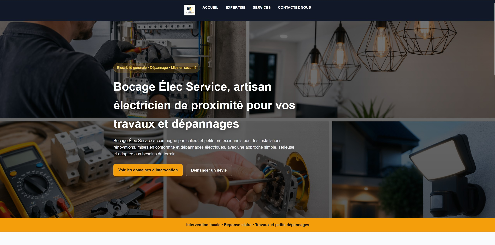
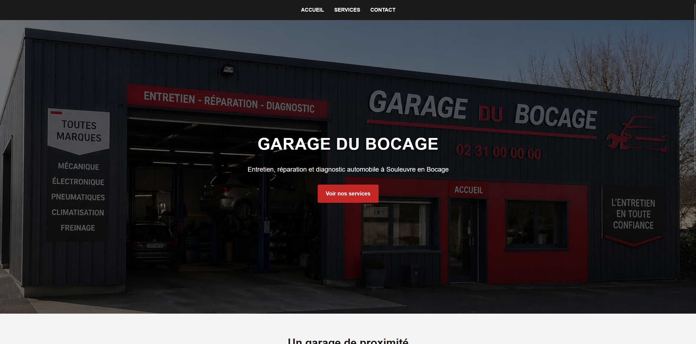
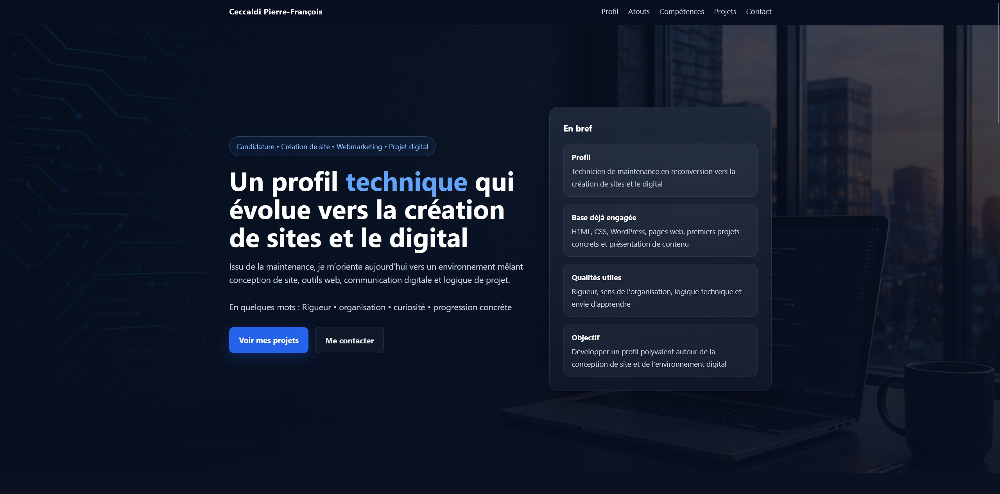

Bocage Élec Service
Réalisation d’un site vitrine fictif pour une entreprise d’électricité locale. L’objectif était de concevoir un site clair, structuré et cohérent, capable de présenter les services proposés et de faciliter la prise de contact.
Le projet s’articule autour de plusieurs pages (accueil, services, domaines d’intervention et contact), avec une attention particulière portée à la lisibilité, à la navigation et à la cohérence visuelle.
Un formulaire de contact ainsi que des sections orientées “besoins clients” ont été intégrés afin de rendre le site plus réaliste et proche des attentes d’un artisan.
Compétences mobilisées :
- Structuration HTML
- Mise en page et design en CSS
- Création de navigation multi-pages
- Conception orientée utilisateur
Technologies : HTML, CSS

Garage du Bocage
Création d’un site vitrine fictif pour un garage automobile afin de travailler la structure HTML, le CSS, la navigation entre plusieurs pages et une identité visuelle cohérente avec un secteur.

Présentation de profil
Réalisation d’une page de présentation pour structurer mon profil, mon parcours technique et mon orientation vers la création de sites et l’environnement digital.